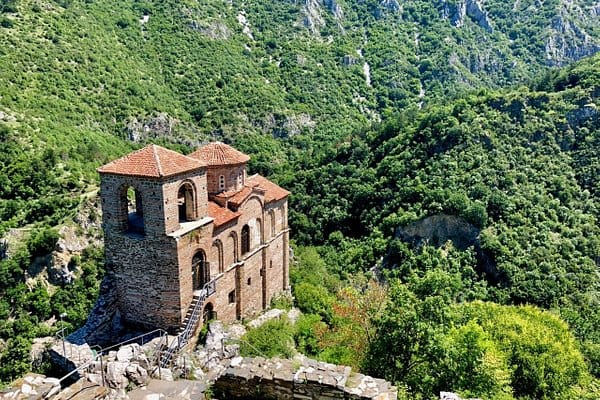

 Asenov Fortress is a medieval fortress in the Rhodope Mountains, located on the hill of the left bank of the Chepelar River, 2-3 kilometres south of Asenovgrad. According to data based on archaeological excavations, the first fortifications in this territory appeared in the 9th century. In particular, this is evidenced by the found coins from the time of the ruler Theophilus. Asen’s fortress was an important centre controlling movement through the river valley to the Aegean Sea from Plovdiv. This was facilitated by the advantageous location right in the Rhodope Mountains. Initially, the fortress was just a tiny tower, around which rural buildings began to be built over time. Later, they separated into two small villages - Stenimaka and Petrich.
The first mention of the Asenova fortress was found in the charter of the Bachkovo monastery of the 11th century: it refers to the “fortified settlement of Petrich”. By the way, this settlement existed only until the 14th century. During the period during which the Third Crusade occurred, the fortress was captured, and then it was referred to as Scribenzion. The fortress was rebuilt in 1231, during the reign of Ivan Asen II. According to the inscription on the wall, the restructuring was necessary to defend the Bulgarians from the Latins. The height of the walls was 12 meters, and the width - was 3 meters. In essence, it was a feudal castle. Today, you can see the surviving three reservoir tanks and three dozen different rooms.
The Church of the Dormition of the Most Holy Mother of God from the 12th-13th centuries is perfectly preserved. This is a two-story, single-nave cross-domed church. The inside of the church is decorated with frescoes by masters of the 14th century. The Byzantines captured the fortress after the death of the Bulgarian Tsar Asen II, and again, it was returned by the Bulgarian Tsar John Alexander closer to the middle of the 14th century. But then, it was captured by the Turks. During this period, the fortress was abandoned, and only the church functioned.
In 1878, the Russians, advancing on the Ottoman troops, recaptured the ruins of the Asenova fortress along with the village of Stanimak. In 1934, the city was renamed Asenovgrad, and in the 70s, active archaeological work began on the territory of the fortress. By 1991, specialists completed the restoration of the fortress, and it turned into a national cultural monument.